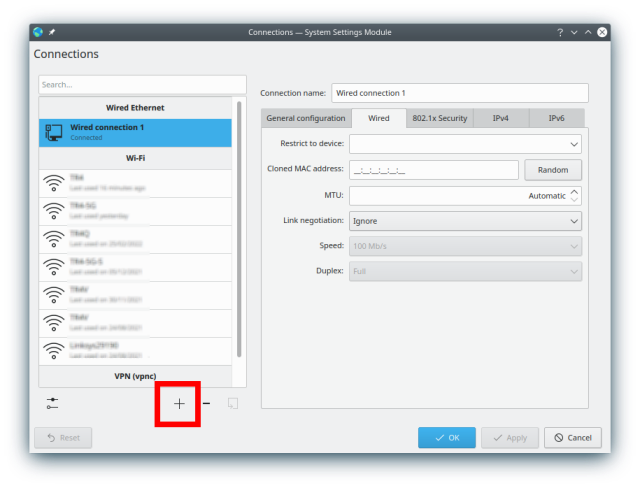
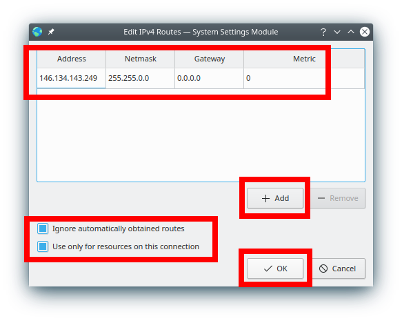
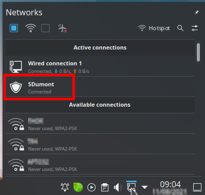

Environment setup
This page shows a simple step-by-step, starting from scratch, to configure a basic and functional JupyterLab (JL) environment for use on the local machine (desktop PC or laptop) and also on the LNCC Santos Dumont (SDumont) supercomputer on a login node. This is the configuration I am using in my works.
Some of the reasons to run JL on SDumont are:
- Use the interactive features of the JL/Python environment directly on the target machine
- Use the packages, tools, and hardware available on SDumont
- Debug directly on the machine where the application will run
- Use tools that generate native code (like Cython, F2FY, Numba, etc.) directly on the target machine
- View and analyze results as they are ready, in such a way as to reduce development time
This page is not intended to be complete, it is a simple step by step that I use to work in SDumont. For this setup, I'm conveniently using a laptop with VirtualBox installed and a virtual machine (VM) running Kubuntu 20.04. In this text, the terms "virtual machine" and "local machine" are used interchangeably, meaning the same thing.
What will be seen next is:
- Installing the Anaconda distribution (on the local machine), and running JL
- VPN configuration for accessing the SDumont, using the os's network manager
- Configuring SSH to use key instead of password, and also using the ControlMaster feature that keeps the connection alive
- Configure the conda environment, and install the Syncthing (ST) package
- Configure ST to keep directories synchronized between machines;
- Run JL on both local and SDumont machines
Anaconda install (local machine)
Let's start by installing the Anaconda distribution on the local machine, and for that we are going to download it, and this can be done either through the browser or the CLI:

Download and install (CLI):
$ cd Downloads/
$ wget https://repo.anaconda.com/archive/Anaconda3-2021.11-Linux-x86_64.sh
$ sh chmod +x Anaconda3-2021.11-Linux-x86_64.sh
$ bash Anaconda3-2021.11-Linux-x86_64.sh -b


Running JupyterLab to check if it's already working (the web browser will run automatically and the JL will appear):
$ source ~/anaconda3/etc/profile.d/conda.sh
$ conda activate
$ jupyter-lab --NotebookApp.token=''

At this point the Anaconda distribution is installed and JupyterLab is running on the local machine.
VPN setup (local machine)
Let's now configure the network manager to access the SDdumont VPN. The steps to be followed are contained in the detailed information provided by the LNCC, and only part of it is reproduced here. The following text assumes that you already have an SDdumont account.
We will need the network-manager-vpnc:
$ sudo apt install network-manager-vpnc
After that, enter the Network Manager, Configure Network Connections, add a connection, and chose Cisco Compatible VPN (vpnc):

The following screen must be completed according to the instructions provided by the LNCC:

We are now going to configure the route to change the behavior of the traffic and make sure that only the resources you want from SDumont pass through this interface, and not all the traffic, and in this way it is possible to use the internet connection of the local machine normally without interference:

Insert (+ Add) the Address 146.134.143.249, Netmask (accept the default), select "Use only for resources on this connection", "Ignore automatically obatined routes", and save the connection (OK):

Then, through the network manager, make the connection, and it should appear connected:

SSH setup
The next step is to configure SSH to use keys and not passwords, and the steps include creating the key and copying it to the SDdumont user area.
The ~/.ssh/config file on the local machine would look like this:
...
ServerAliveInterval 120
Host sd
HostName login.sdumont.lncc.br
User <username>
ControlMaster auto
ControlPath ~/.ssh/remote_sd
...
The <username> needs to be replaced with the username. The option called ControlMaster allows sharing of multiple sessions on a single network connection, so when connecting to the cluster (using ssh -Nf sd) the connection is active, and all subsequent ssh sessions (including svn, rsync , etc. ) do not need authentication. At the end of use, it is necessary to end the connection with the command ssh -O exit sd. Note that the <username> is the username being used on the machine, and will vary from case to case.
Creating the key:
$ ssh-keygen -t ed25519
Generating public/private ed25519 key pair.
Enter file in which to save the key (/home/<username>/.ssh/id_ed25519):
Created directory '/home/<username>/.ssh'.
Enter passphrase (empty for no passphrase):
Enter same passphrase again:
Your identification has been saved in /home/<username>/.ssh/id_ed25519
Your public key has been saved in /home/<username>/.ssh/id_ed25519.pub
The key fingerprint is:
SHA256:+yk+H(...)/0AuM x@vm001
The key's randomart image is:
+--[ED25519 256]--+
| . . . |
| . o + . |
| . + + + o |
|o.. * . + o |
|o. o . ESo . |
|.o . ... |
|o o o o |
|.=.o ..o+* o |
|ooO+.o=BO** |
+----[SHA256]-----+
Copy the SSH key to the user area on the SDdumont:
$ ssh-copy-id <username>@login.sdumont.lncc.br
/usr/bin/ssh-copy-id: INFO: Source of key(s) to be installed: "/home/<username>/.ssh/id_ed25519.pub"
The authenticity of host 'login.sdumont.lncc.br (146.134.143.249)' can't be established.
ECDSA key fingerprint is SHA256:FZQP(...)JnyI.
Are you sure you want to continue connecting (yes/no/[fingerprint])? yes
/usr/bin/ssh-copy-id: INFO: attempting to log in with the new key(s), to filter out any that are already installed
/usr/bin/ssh-copy-id: INFO: 1 key(s) remain to be installed -- if you are prompted now it is to install the new keys
<username>@login.sdumont.lncc.br's password:
Number of key(s) added: 1
Now try logging into the machine, with: "ssh '<username>@login.sdumont.lncc.br'"
and check to make sure that only the key(s) you wanted were added.
At this point, if everything was configured correctly, it is already possible to access without password:
$ ssh sd
Last login: Thu Apr 7 18:32:18 2022 from 146.134.223.189
________________________________________________________________
_____ _____ _
/ ____| __ \ | |
| (___| | | |_ _ _ __ ___ ___ _ __ | |_
\___ \| | | | | | | '_ ` _ \ / _ \| '_ \| __|
____) | |__| | |_| | | | | | | (_) | | | | |_
|_____/|_____/ \__,_|_| |_| |_|\___/|_| |_|\__|
_________________________________________________________________
Manual: http://sdumont.lncc.br/support_manual.php
_________________________________________________________________
The available softwares can be listed with the command: module avail
If there's something missing, please get in contact with helpdesk-sdumont@lncc.br
_________________________________________________________________
O termo de uso do Supercomputador SDdumont foi atualizado em 10/10/2019.
Ao continuar você concorda com todos os termos descritos nele.
Termo de uso: http://sdumont.lncc.br/terms.php
_________________________________________________________________
[<username>@sdumont13 ~]$
Conda environment (SDumont)
The next step now is to configure a Conda Environment (CE) to be used on the SDdumont. SDdumont already has some versions of the Anaconda distribution installed, selectable via the module command, and we will use the most current one (2020.11):
$ module avail -t 2>&1 | grep -i Anaconda
anaconda2/2018.12
anaconda2/2019.10
anaconda3/2018.12
anaconda3/2020.11
$ module load anaconda3
$ conda list anaconda$
# packages in environment at /scratch/app/anaconda3/2020.11:
#
# Name Version Build Channel
anaconda 2020.11 py38_0
Let's create an empty conda environment in the user area and activate it nested with the existing environment, so we can install any missing packages. The new conda environment will be created in the scratch/ area so that programs running on the execution nodes can access it.
$ conda create --prefix /scratch${HOME#/prj}/env01
Collecting package metadata (current_repodata.json): done
Solving environment: done
==> WARNING: A newer version of conda exists. <==
current version: 4.9.2
latest version: 4.12.0
Please update conda by running
$ conda update -n base -c defaults conda
## Package Plan ##
environment location: /scratch/<project>/<username>/env01
Proceed ([y]/n)?
Preparing transaction: done
Verifying transaction: done
Executing transaction: done
#
# To activate this environment, use
#
# $ conda activate /scratch/<project>/<username>/env01
#
# To deactivate an active environment, use
#
# $ conda deactivate
And to activate and access the nested environment, we first configure the shell:
$ source /scratch/app/anaconda3/2020.11/etc/profile.d/conda.sh
And then we activate the nested environment:
$ conda activate --stack /scratch${HOME#/prj}/env01
Now we can update or install missing packages.
ST setup (SDumont)
The main purpose of syncthing (ST) is to have a mirror directory automatically and constantly synchronized between the local machine and SDdumont, so that we don't have to remember to copy files from one machine to another, or worry about what else is updated where, thus automating a part of the workflow. ST also works similarly to JL, with client/server architecture and web interface. The ST needs to be installed on both the local machine and the SDdumont, and this can be done using conda. Let's start with the SDdumont, assuming the nested conda environment is already active:
$ conda install -c conda-forge syncthing
Collecting package metadata (current_repodata.json): done
Solving environment: done
==> WARNING: A newer version of conda exists. <==
current version: 4.9.2
latest version: 4.12.0
Please update conda by running
$ conda update -n base -c defaults conda
## Package Plan ##
environment location: /scratch/<project>/<username>/env01
added / updated specs:
- syncthing
The following packages will be downloaded:
package | build
---------------------------|-----------------
syncthing-1.19.2 | ha8f183a_0 8.2 MB conda-forge
------------------------------------------------------------
Total: 8.2 MB
The following NEW packages will be INSTALLED:
syncthing conda-forge/linux-64::syncthing-1.19.2-ha8f183a_0
Proceed ([y]/n)?
Downloading and Extracting Packages
syncthing-1.19.2 | 8.2 MB | ############################################# | 100%
Preparing transaction: done
Verifying transaction: done
Executing transaction: done
ST setup (local machine)
Let's do the same on the local machine, but in this case assuming the conda environment is not active yet:
x@vm001:~$ source ~/anaconda3/etc/profile.d/conda.sh
x@vm001:~$ conda activate
(base) x@vm001:~$ conda install -c conda-forge syncthing
Collecting package metadata (current_repodata.json): done
Solving environment: done
==> WARNING: A newer version of conda exists. <==
current version: 4.10.3
latest version: 4.12.0
Please update conda by running
$ conda update -n base -c defaults conda
## Package Plan ##
environment location: /home/<username>/anaconda3
added / updated specs:
- syncthing
The following packages will be downloaded:
package | build
---------------------------|-----------------
conda-4.12.0 | py39hf3d152e_0 1014 KB conda-forge
python_abi-3.9 | 2_cp39 4 KB conda-forge
syncthing-1.19.2 | ha8f183a_0 8.2 MB conda-forge
------------------------------------------------------------
Total: 9.2 MB
The following NEW packages will be INSTALLED:
python_abi conda-forge/linux-64::python_abi-3.9-2_cp39
syncthing conda-forge/linux-64::syncthing-1.19.2-ha8f183a_0
The following packages will be UPDATED:
conda pkgs/main::conda-4.10.3-py39h06a4308_0 --> conda-forge::conda-4.12.0-py39hf3d152e_0
Proceed ([y]/n)?
Downloading and Extracting Packages
conda-4.12.0 | 1014 KB | ############################################# | 100%
syncthing-1.19.2 | 8.2 MB | ############################################# | 100%
python_abi-3.9 | 4 KB | ############################################# | 100%
Preparing transaction: done
Verifying transaction: done
Executing transaction: done
JL (local machine)
At this point the basic configuration is done and we can finally get into JL. Let's first do this on the local machine:
$ source ~/anaconda3/etc/profile.d/conda.sh
$ conda activate
$ syncthing --no-browser --gui-address=0.0.0.0:8384 > ~/8384.log 2>&1 &
$ cd ~/Sync
$ jupyter-lab --no-browser --ip=0.0.0.0 --NotebookApp.token="" --port=8888 > ~/8888.log 2>&1 &
The --no-browser option means do not automatically run the web browser, --gui-address chooses external access and port number. For JL, --ip=0.0.0.0 allows access from another machine, --NotebookApp.token="" allows use without security token, --port=8888 sets the port to use, 8888.log is the log file, and & makes the server run in the background (to stop it: killall jupyter-lab).
The first time ST is run, it automatically creates the ~/Sync directory. We enter this directory, configure the environment and run the JL server. Note that the use of --NotebookApp.token="" should be avoided for security reasons, but its correct use is beyond the scope of this introduction.
When running the web browser and typing the addresses http://localhost:8888 and http://localhost:8384 in two different tabs, the result should be:

Basically what we did was four things (in sequence):
- Configure the CE
- Run ST server
- Enter the working directory
- Run JL server
The ST should show:

Enter the Actions menu choose Show ID and write down the ID to use later.
From this point on, most tasks can be done within JL as it has a file browser, terminal, notebook, text editor, table of contents, pdf viewer, etc. Note that there are several possible ways to use JL, and I'm only using one of them. To access the SDumont we will use the JL, the only thing that will be done "outside" will be the VPN connection that will be made using the system's network manager.
JL (SDumont)
To access SDumont we will choose two random ports, one for JL (35655), and another for ST (28863). First we activate the VPN in the system's network manager, then using a notebook in the JL, we activate the SSH connection, then already in the login node we activate the CE, then the STing, we enter the working directory (~/Sync), we run the JL server, and finally, on the local machine, we create the two tunnels to access the JL and STThing that are running on SDumont. The commands below are running inside a notebook cell in JL on the local machine:
%%bash
ssh -Nf sd
ssh -T sd <<'EOF'
hostname
module load anaconda3
source /scratch/app/anaconda3/2020.11/etc/profile.d/conda.sh
conda activate --stack /scratch${HOME#/prj}/env01
syncthing --no-browser --gui-address=0.0.0.0:28863 > ~/28863.log 2>&1 &
cd ~/Sync
jupyter-lab --no-browser --port=35655 --ip=0.0.0.0 --NotebookApp.token="" > ~/35655.log 2>&1 &
EOF
ssh -NfTL 8385:localhost:28863 sd
ssh -NfTL 8889:localhost:35655 sd
And the result is shown below, the first two tabs are referring to the local machine, and the last two are JL and ST running on SDumont. The JL tab running on SDumont may take a while to appear:

JL running on SDdumont:

ST running on SDdumont:

In this example above, we have the servers running with the interface being accessed in the web browser on the local machine at the addresses:
| server | local machine | SDumont |
|---|---|---|
| JL | localhost:8888 | localhost:8889 |
| ST | localhost:8384 | localhost:8385 |
The next step now is to sync the ~/Sync directories. To do this, in ST, we click on + Add Remote Device and enter the ID that we had previously noted:

On the other machine a warning appears, just add the device:

Repeat adding device on the other machine:

Add the folder:

Repeat on the other machine:

To not have to keep adding directories, one option is to configure it to add automatically:

Once the ST is configured, when creating or modifying a file on one machine, the other is automatically updated. In the picture below, on the left side is a browser window showing the JL running on the local machine editing a notebook connect.ipynb, and on the right side window the same file is shown on the JL running on SDdumont:

The notebook file "connect.ipynb" is available at: http://github.com/efurlanm/msc22/blob/main/docs/Notebooks/connect.ipynb
At this point we already have the basic tools configured, and from now on to access SDumont the workflow is:
- run JL and ST servers on local machine
- load the Notebook (if not already) containing the commands to connect to SDumont and run the servers
- turn on VPN in system connection manager
- use SSH with the ControlMaster feature to keep the connection alive
- run JL and ST servers on SDumont
- enable SSH tunnels
- use web browser to run clients
Conclusion
In this page we saw how to configure and run the JL environment on the SDumont supercomputer, starting from scratch. In the end we were left with two JL servers running, one on a local machine, the other on SDumont, and their web interfaces were accessible in two web browser windows on the local machine. Additionally the ST file synchronization tool has been configured.